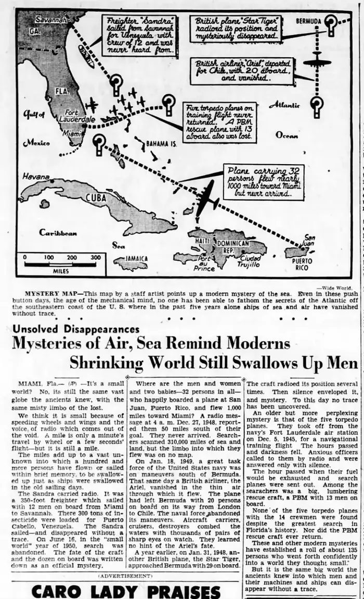
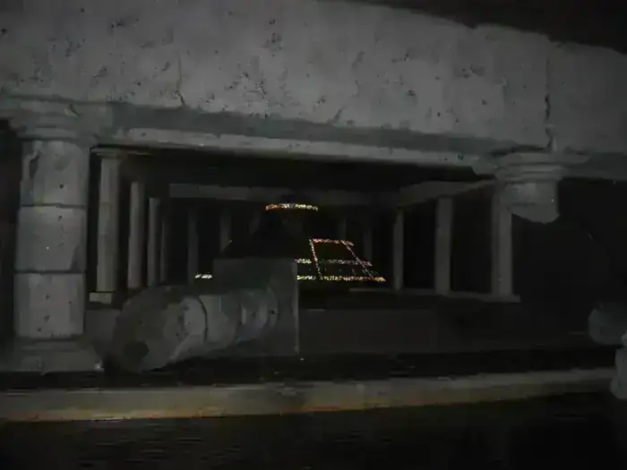
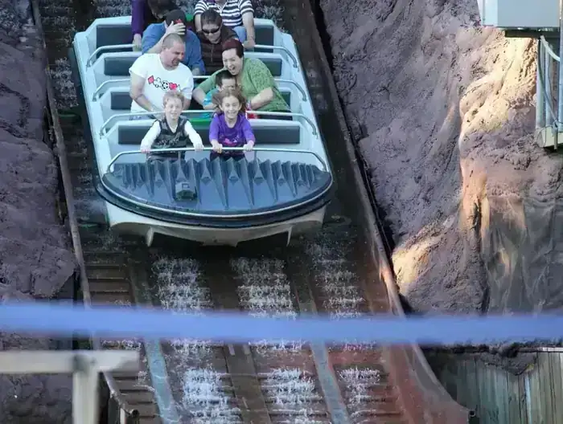

The claim
The Bermuda Triangle is a region between Miami, Bermuda and Puerto Rico where ships and aircraft are said to disappear disproportionately. The legend was assembled in the 1950s and 1960s from press pieces, then fixed by Charles Berlitz's 1974 bestseller. Flight 19 — five Navy bombers lost in 1945 — is its founding case.
Maps, diagrams and images






The statistics
The decisive work is unglamorous. A 1975 study by Lawrence Kusche, a librarian at Arizona State, went through the individual cases and found that many were not mysteries at all: some had never been in the triangle, some were lost in bad weather with known causes, and several were reported late or exaggerated. Lloyd's of London, which insures ships, has said the region shows no unusual loss rate.
The statistical error is the missing denominator. The triangle is one of the busiest shipping and flying corridors in the world, with heavy weather, the Gulf Stream, and shallow reef-strewn waters around the Bahamas. A region with more traffic will have more losses; that is arithmetic, not mystery.
Documented: ships and aircraft have been lost there, as elsewhere, with a variety of ordinary causes.
Documented: case-by-case investigation dissolves most of the famous incidents.
Documented: the region has no unusual insurance loss rate.
Not established: any anomaly, mechanism, or elevated rate of disappearance.
The lesson: a legend can be built entirely from selection — the cases that are famous are the ones that were selected to be famous.
Why it is in the archive
Because it is the archive's cleanest demonstration that the denominator is the argument. Every page here that says 'no evidence' is making a statistical claim, and this is the page where that claim is easiest to see.
Open resources on this topic
- BookThe Bermuda Triangle of Education. — Bertrand, Yves · 1994 (Internet Archive, free to read)
- BookThe mysteries of the Bermuda Triangle — ['Belanger, Jeff', 'Marchesi, Stephen, illustrator'] · 2010 (Internet Archive, free to read)
- BookThe Bermuda Triangle: the unsolved mystery — Miller, Connie Colwell, 1976- · 2009 (Internet Archive, free to read)
- PapersOpen-access articles: DOAJ · PubMed Central · Internet Archive Scholar
- BooksPublic-domain and borrowable copies: Open Library · Project Gutenberg · Google Books
Cite this page
Momin, S. (2026). The Bermuda Triangle. The Larger World Archive. https://drsamonline.github.io/LARGE_GLOBE/bermuda-triangle.htmlMomin, Sohil. “The Bermuda Triangle.” The Larger World Archive, 2026, https://drsamonline.github.io/LARGE_GLOBE/bermuda-triangle.html.Momin, Sohil. “The Bermuda Triangle.” The Larger World Archive, 2026. https://drsamonline.github.io/LARGE_GLOBE/bermuda-triangle.html.@misc{the2026bermuda,
author = {Momin, Sohil},
title = {The Bermuda Triangle},
year = {2026},
howpublished = {The Larger World Archive},
url = {https://drsamonline.github.io/LARGE_GLOBE/bermuda-triangle.html},
note = {Last reviewed 20 November 2026}
}Last reviewed 20 November 2026 · Corrections policy · this page is not peer reviewed
Sources for this page
- Wikipedia, “Bermuda Triangle” — the legend, the cases and the debunkingen.wikipedia.org
- Wikipedia, “Flight 19” — the founding case and its investigationen.wikipedia.org
- Wikipedia, “Gulf Stream” — the water the region sits inen.wikipedia.org
- Wikipedia, “Selection bias” — the statistical error at the centreen.wikipedia.org